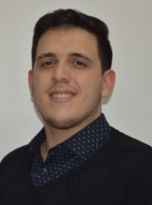

Gregorio Carranza Torres
Home
Otros integrantes
Contacto
Sobre mi

Titulo: Tripulante de Cabina de Pasajeros / Tecnico Electronico
Edad: 23 años
Fecha de nacimiento: 30/10/1998
Estado civil: Soltero
Estudios:
Tecnico Electronico - Colegio Tecnico N°4 "I Brigada Aerea", El Palomar
Tripulante de Cabina de Pasajeros - Instituto de Formacion Profecional Aeronautica (IFPA)
Experiencia Laboral:
Gestor Comercial - Grupo Chg | Agosto 2020- junio 2022
Sector de ventas
Resolución de conflictos comerciales
Gestión de envíos
Técnico electrónico - IAAC | ENERO 2019 - Diciembre 2020
Puesta en función de su simulador para tripulante de cabina de pasajeros
Conocimientos
Html
CSS
SASS
React
NodeJS
Database (Mysql, mongodb)
Habilidades
Buena lectura de documentación
Proactivo
Hobbies
Videojuegos
Cine
Fortalezas
Pensamiento lateral
Resolución de problemas
Debilidades
No me hallo trabajando bajo presión